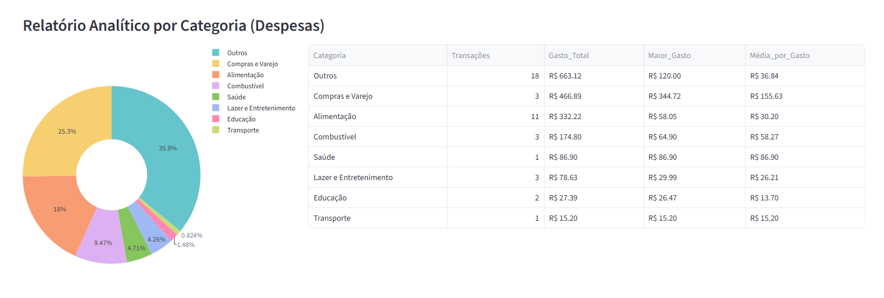
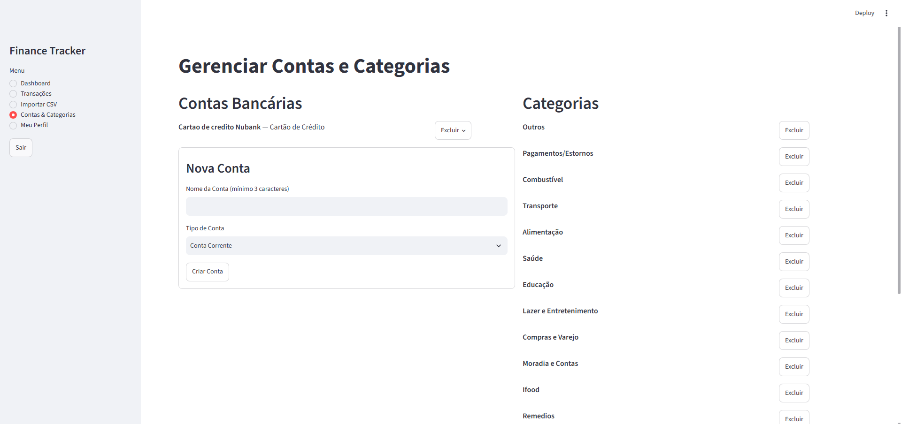

Olá, me chamo João Vitor
Desenvolvedor Backend em formação.
C - Python - Java - FastAPI - PostgreSQL - Machine Learning - SQL - Git - Eletrônica/hardware
Sobre mim
Atualmente sou estudante da Universidade do Oeste Paulista (UNOESTE) em Presidente Prudente - SP do curso Sistemas de Informação. Tenho 21 anos e desde muito cedo sempre tive muito comprometimento com os estudos e interesse enorme por tecnologia, o que me levou a formação do curso técnico de eletroeletrônica pela instituição SENAI - SP, no qual aprendi sobre instalações elétricas (TI), microcontroladores, linguagem de baixo nível e o avançado sobre componentes eletrônicos e respectivas instalações. No início de 2025 eu iniciei minha jornada pelo mundo da computação e do desenvolvimento de software, onde tenho que aprofundado com muito entusiasmo, paixão e comprometimento.
Com o constante estudo, criação de projetos que potencializam e desafiam meus conhecimentos e utilização de tecnologias modernas com os avanços da IA. A minha carreira está seguindo um caminho baseado em engenharia de software, sendo a base para a criação de qualquer projeto ou software, alinhado com a utilizações de LLMs e modelos de Machine Learning, propondo soluções inovadoras, automatizando processos e expondo os resultados via API unindo o melhor dos dois mundos.
O meu foco atual é continuar aprendendo novas tecnologias visando implementa-las em soluções reais, por isso me interessei por entender LLMs e o cálculo por trás da incrível área de Machine Learning. Eu acredito que tudo leva a matemática e entender sobre os fundamentos, redes neurais e como uma IA interpreta uma imagem ou faz uma previsão pode abrir muitas possibilidades de crescimento de soluções dentro da área, sendo extremamente poderosa para auxiliar problemas que hoje não se tem solução
Também estou muito focado em continuar melhorando minha lógica de programação consistentemente, analisando técnicas de resolução de algoritmos, estrutura de dados e identicação de padrões, atualmente pratico exercícios no hackerrank, leetcode (separado por padrões de problemas como Two Pointers, hash map no neetcode) e exercícios de estrutura de dados da faculdade
Tudo isso me levou ao prêmio de melhor aluno do terceiro termo do meu curso, no qual eu levo com muito carinho como reconhecimento pela responsabilidade e seriedade que sempre tive com os estudos e trabalhos por onde eu passei
Os meus estudos e projetos estão documentados no meu github, que pode ser acessado pelo link Github
Experiência
Técnico em Eletroeletrônica - SENAI-SP
Formação técnica com foco em instalações elétricas, microcontroladores e componentes eletrônicos.
Finance Tracker - Projeto de portfólio
API backend completa em FastAPI + PostgreSQL, aplicando arquitetura em camadas, autenticação JWT e boas práticas de engenharia.
LibrasConnect - Projeto de acessibilidade
Reconhecimento de linguagem de sinais via MediaPipe e classificador customizado, com foco em impacto social.
Soft Skills
Hard Skills
Portfolio
Finance Tracker
Projeto visualizávelO Finance Tracker é uma API backend para gestão de finanças pessoais, construída com FastAPI e PostgreSQL, seguindo uma arquitetura em 4 camadas (router -> service -> repository -> core). O projeto gerencia contas, categorias e transações, com importação automática de extratos em CSV (formato Nubank) e prevenção de registros duplicados por meio de hashing determinístico.
Desenvolvido como projeto de portfólio com foco em boas práticas de engenharia backend: autenticação segura via JWT/OAuth2, proteção contra IDOR, migrações versionadas com Alembic e validação de dados com Pydantic.
Entre as principais funcionalidades estão CRUD completo de contas e categorias, classificação automática de transações por regex, deduplicação de transações via hash, e um dashboard de receitas e despesas com quebra por categoria, atualizado automaticamente conforme transações são classificadas, editadas ou removidas. O frontend é servido com Streamlit, consumindo a API separadamente do backend (Uvicorn).
A motivação do projeto nasceu de um problema real: analisar as próprias finanças de forma totalmente gratuita, ao mesmo tempo em que aprofundava conhecimento em arquitetura backend, lógica de programação, constraints de banco de dados, Alembic e tratamento de erros.
Imagens de exemplo do projeto


LibrasConnect
Repositório ainda não publicado - link em breve.
Reconhecimento de linguagem de sinais em tempo real usando OpenCV e MediaPipe para extração de landmarks e um classificador customizado, com foco em acessibilidade.
MVP ainda em construção, em conjunto com o curso Machine Learning Specialization da Deeplearning.ai/Stanford Online
Interpretador SQL em C
Projeto visualizávelProjeto acadêmico de interpretador SQL em C com foco em estrutura de dados dinâmicas e relacionamento entre elas, incluindo tratamento contra vazamento de memória, busca entre tabelas, parser dos comandos SQL e relatórios e relacionamentos de estruturas totalmente dinâmicas implementadas sem funções prontas. Projeto de alto nível técnico ainda em desenvolvimento